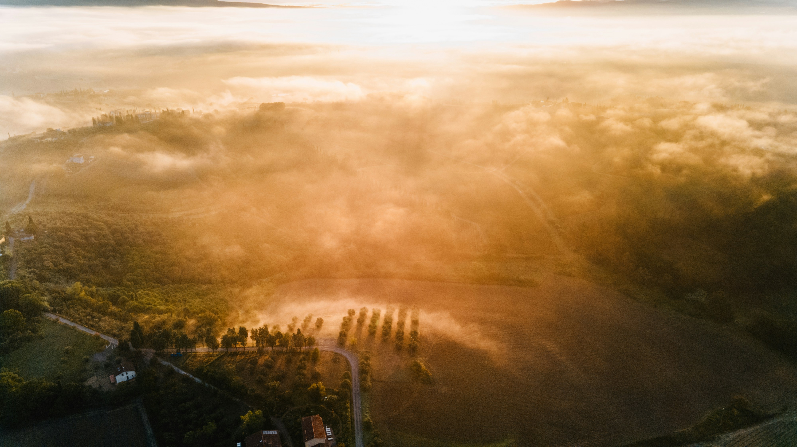
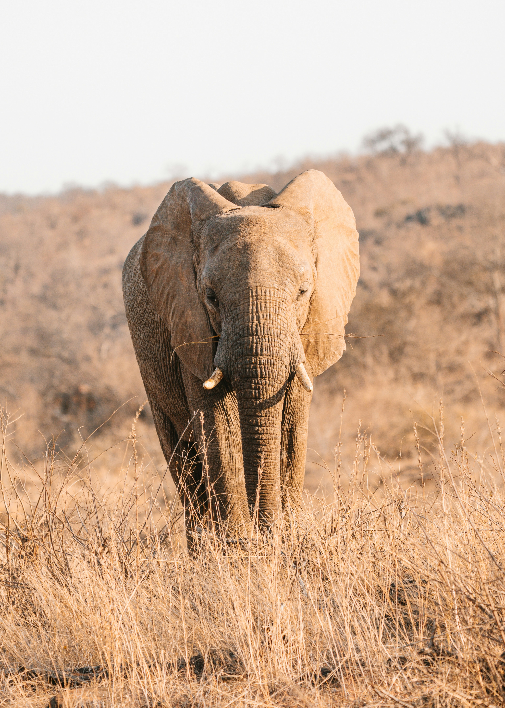
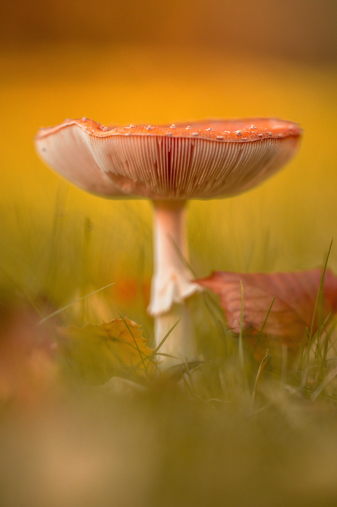
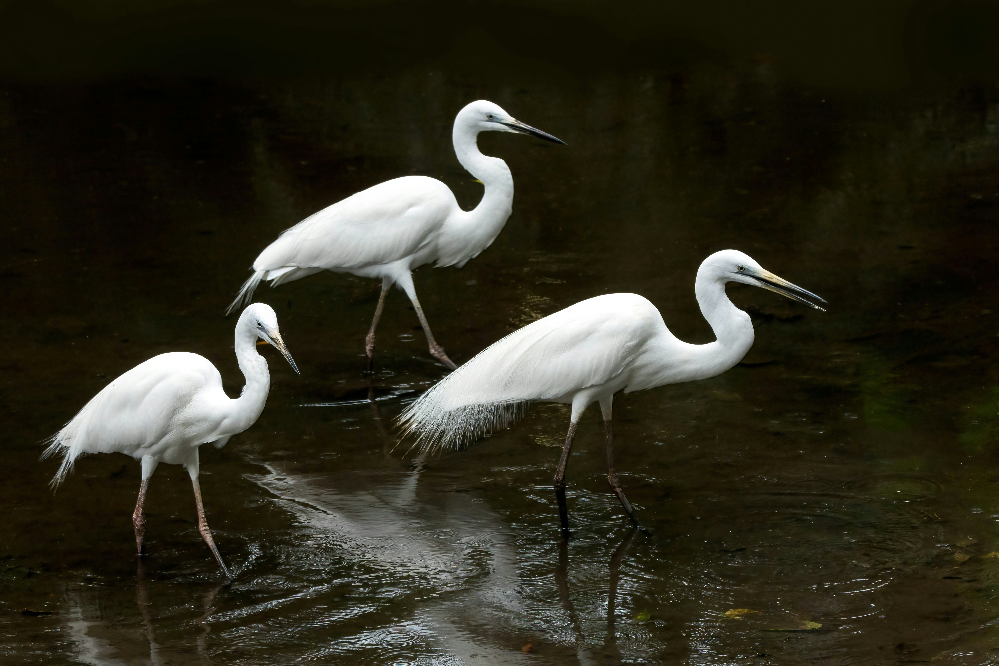
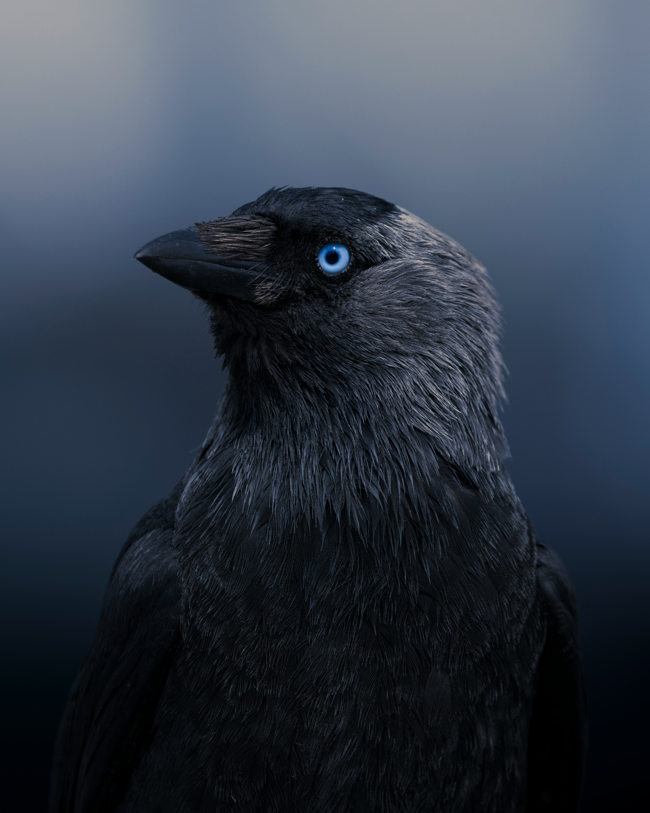
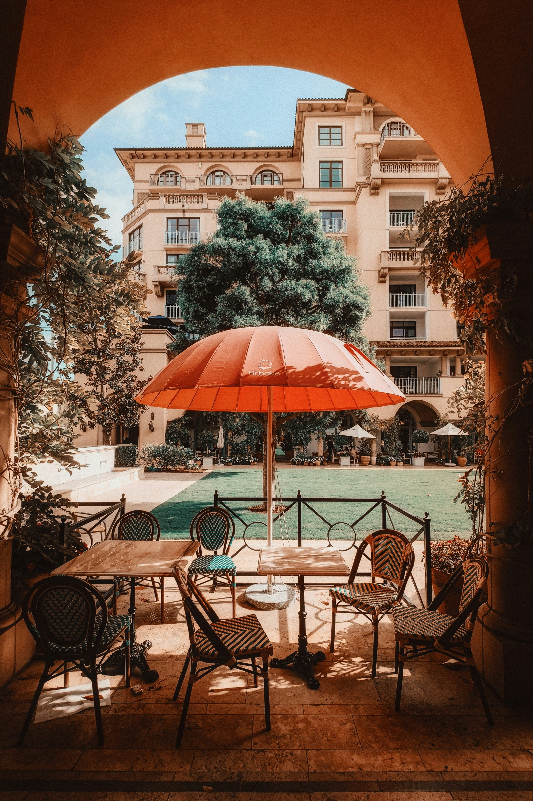

Task 4 – Image Styling Portfolio
This gallery demonstrates various CSS image styling techniques.
1. Rounded & Circular Images
2. Borders & Shadows

3. Hover Effects & Transitions
 
4. CSS Filters
  
5. Image Overlay with Text
Nature Collection